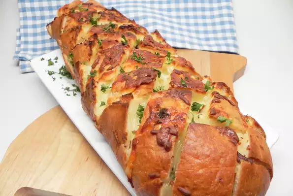
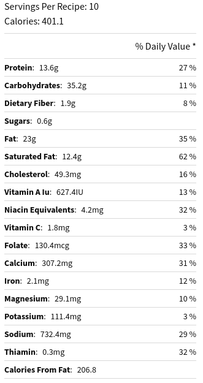

Bread

Stuffed Italian Bread
An easy way to dress up a plain loaf of bread! Great as an appetizer or as a side dish to grilled steaks. My local grocery sells a blend of mozzarella and provolone cheese that I use.
Timings
-
Preparation:
15 mins
-
Cook
25 hr
-
Total
40 mins
-
Servings
10
-
Yield
10 servings
Nutritional info

Ingredients
- ½ cup butter, melted
- 3 tablespoons chopped fresh parsley
- 2 tablespoons olive oil
- 3 cloves garlic, minced
- 1 loaf Italian bread
- 12 ounces shredded Italian cheese blend
Steps
- Preheat oven to 350 degrees F (175 degrees C).
- Mix melted butter, parsley, olive oil, and garlic together in a bowl.
- Slice bread diagonally without cutting all the way through; do the same on the opposite diagonal to create cube-shaped sections still attached to the bottom crust.
- Spoon butter mixture carefully between sections; stuff in shredded Italian cheese blend. Wrap loaf in aluminum foil.
- Bake in the preheated oven for 15 minutes; unwrap and bake until cheese is melted, about 10 minutes more.